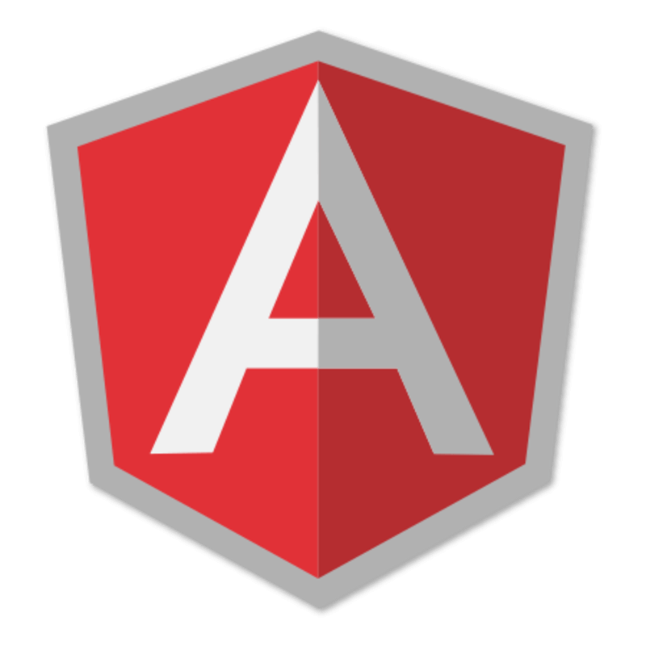
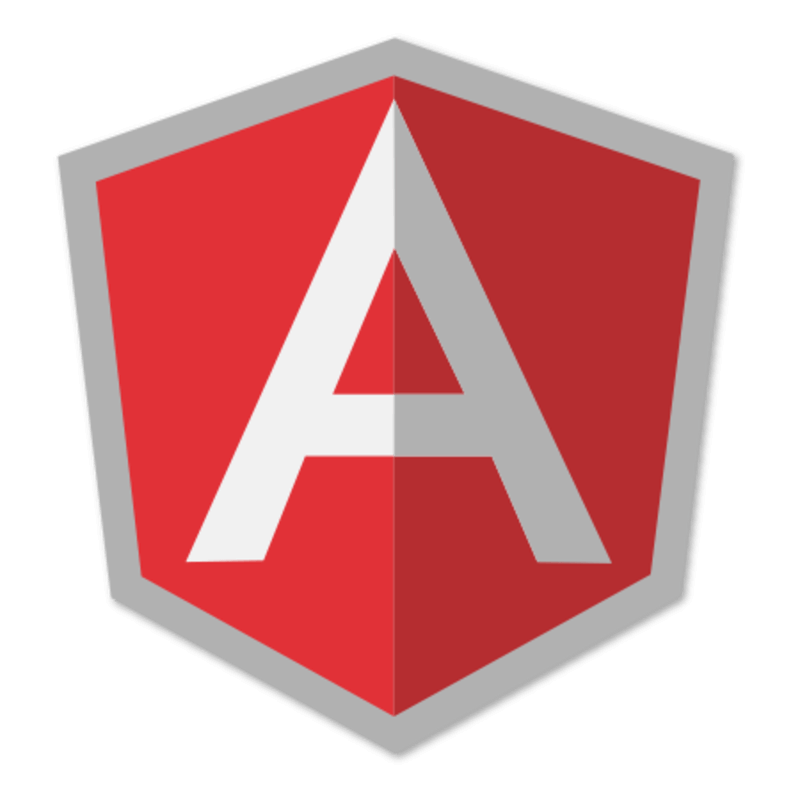

Developpeur Web Junior
{ Bac +2 Developpeur Logiciel }
En cours
A Propos de Moi
Bonjour, je me nomme Alan
Lazzarotto et j'ai 24 ans.
Tout droit sorti l'école Develo'Pont (labélisée par
la
Grande Ecole du Numérique) située à Pont en Royans, je vise un Bac +2 “Developpeur Logiciel”.
J'ai “developpé” ma passion pour la programmation dès mon adolescence et j'ai pu l'approfondir grâce à l'enseigne Simplon.co qui m'a permis de suivre une formation intensive au sein d'une équipe de personnes très motivées.
Après être entré et avoir exploré le monde de la programmation, j'ai
eu un véritable coup de foudre pour le coté back-end que je trouve beaucoup
plus intéressant du fait que ce soit la partie que l'utilisateur de voit pas, mais je garde malgré tout de bonnes bases en front-end.
Vous pouvez
maintenant parcourir cette page web et, si vous le souhaitez, vous pouvez
me laisser un message dans la section Contact en fin de page. Vous pouvez aussi regarder
mes différents travaux réalisés durant mon enseignement dans la section
Travaux. En vous remerciant
d'être
passé par ici, je vous laisse naviguer en paix !
Technologies
 
